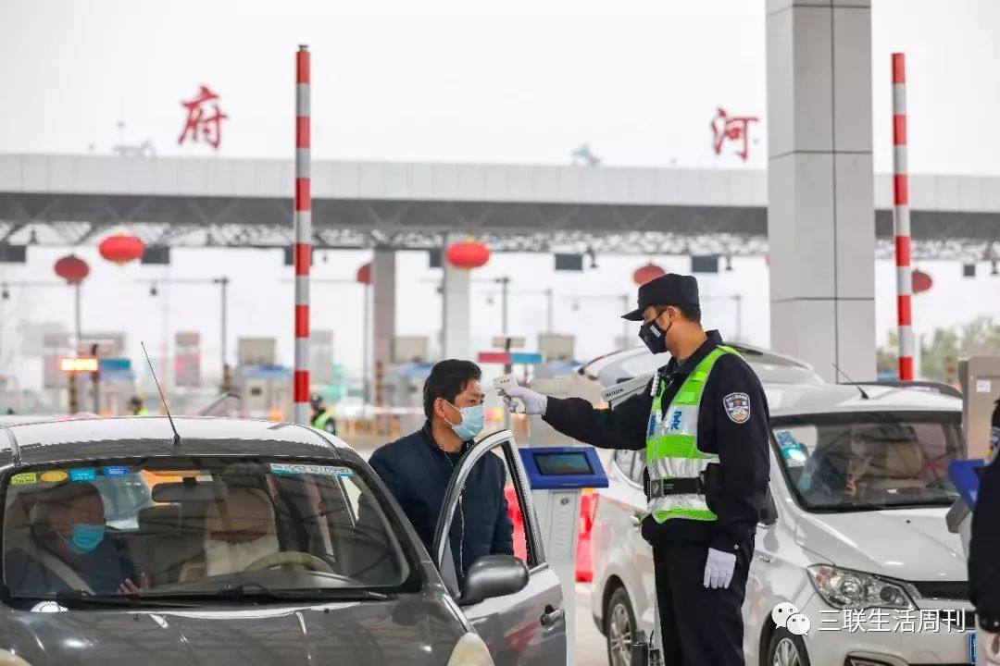
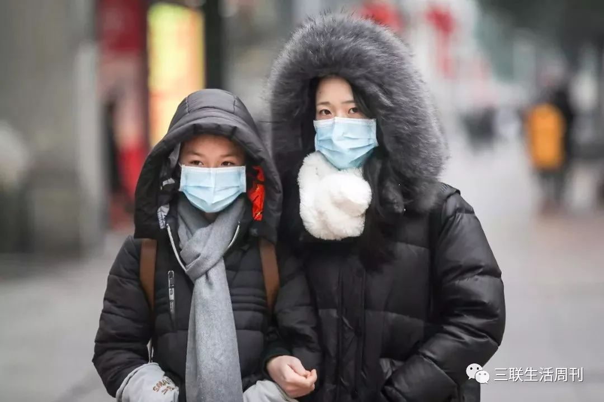

国际公共卫生专家：关键不在拐点，要看以何标准确定疫情消灭
原文链接 备份链接 要允许公卫流行病学专家发表意见 允许医生们讨论； 要信息透明，不要怕社会小混乱 小混乱可以避免大乱 2月7日晚，医护人员做好准备即将进入武汉客厅“方舱医院”进行工作。 据国家卫健委通报的数据，截至2月14日24时，全 …
SARS17年后，新型冠状病毒肺炎再次对中国以及全球的防疫体系提出了严峻挑战。尽管在20世纪，医学对已知传染性疾病进行了有效控制，但正如世界卫生组织所强调的那样，新型传染病仍是21世纪防疫大敌。新型传染病带来的挑战在哪里？全球无处不在的超级城市对防疫带来了哪些挑战？卫生体制、社会与个人能够做出何种回应？
记者 | 徐菁菁
受访者 | 医学史专家、上海交通大学特聘教授、美国匹兹堡大学亚洲研究中心访问教授刘士永
三联生活周刊：从目前的公开数据看，与一些恶性传染病相比，新型冠状病毒肺炎的死亡率并不是很高。也有专家指出，大部分患者是轻症。但是，新冠疫情还是给人们带来了巨大的恐惧和不安。从医学史的角度，如何理解这种情绪？
刘士永：乔万尼·薄伽丘的《十日谈》，描绘了1348年一群为了避疫逃入偏乡的男女，将疫病归咎于阶级矛盾与宗教腐败，反映出人性面对未知疾病时究责他人的本能反应。武汉封城前后，部分居民“外逃”以避瘟祸，外界对来自武汉者避之唯恐不及，就是《十日谈》的现代版，投射出人性面对未知威胁时的本能反应。**既然面对未知，恐慌是人性的本能，那防疫就不得不把这层因素纳入考虑，并降低其可能的负面作用。
**
**
**
要消除这种恐慌，最重要的是一点是将“未知”化为 “已知”，或至少是“可预知”的状态。这可以从人类流感历史的过程中获得一些启发：1918年的西班牙流感，就是在未知又新型的情况下传播的。而在1960年代以后，人类对流感病毒与变异了解日增，加上疾病统计愈发精确，流病学家足以推估流行周期与病种特征，才会有每年不同配比的3或4价疫苗出来。典型案例就是，自2019年入冬以来美国暴发的变异B型流感，虽死亡人数已超越新冠肺炎，推估还将造成近6000例相关死亡个案，却并未引起社会恐慌，原因就在于流感普遍被认为是“已知”且“可控制”的流行病。
而面对新冠肺炎，人类毫无历史基础予以分析，现在的许多推测除了根据病毒本身生物特征计算外，只能比之于不尽相同的SARS经验推估。这种科学论证上常态的不确定性，加上社会中SARS的阴影被唤起，大众、甚至政府，自然不免产生未知的恐慌。
三联生活周刊：您有一个观点，19世纪50年代以前，防疫工作经常仰赖“清洁”与“隔离检疫”两大工作，焦点是发现和隔离病人。而到19世纪下半叶，由于确定了细菌与疫情间的病理关系，这才将防疫政策的焦点由隔离病人转变为阻绝病菌传播。具体来说，这种认识和观念的转变如何改变了防疫实践？
刘士永：这类的例证不少，最常见的就是检疫法规与行为的改变。
在东亚，1886年，日本暴发全国性霍乱疫情。内务省卫生局将极其严格的检疫与区域封锁制度引入首都东京，强制居民隔离，甚至是搬迁。二战以前，乘客罹患法定传染病或船只来自疫区时，以麻风为例，如无适当的健康证明，都必须进行绝对隔离。民国初年甚至广东、广西，还发生过集体枪杀或活埋疑似麻风患者的恐怖例子。但随着麻风杆菌的生物特征与致病机转的确认，有效药物的研制，人们可以依据这些知识发展并施行居家治疗。遂在1970年代后，既有的绝对隔离法规，乃至于相应设立的麻风村、麻风院，逐渐淡出隔离医疗模式，而转为居家与门诊治疗的主流模式。类似的例子非常多。
 蔡小川 摄
蔡小川 摄
在病原确定、传染媒介清楚，与并有快速试剂的发明下，多数法定传染病从14天严格隔离检疫，逐渐变为自我隔离与居家护理；这就是因为防疫重点转为消灭病菌，而非染病的人。
值得附带一提的是，过去，在有效药物未能出现前，隔离并不如外界想象般地施以妥善治疗和安置，其隐含的更多是“坐以待毙、勿祸延他人”的思考。有积极治疗、照护意义的隔离病院得是1970以后的事了，而此时也是居家自我隔离兴起的时刻。由是可见，确认病原、有效治疗，是改变这一防疫模式相当关键的技术基础。
三联生活周刊：但在面对新型传染病的时候，我们还是回到了“清洁”与“隔离检疫”的模式中，甚至于，我们采用了“封城”。我们注意到，这个做法并不是没有争议。
刘士永：发现病菌，并针对之加以消灭，成为预防医学尤其是疫苗、免疫预防或治疗上很重要的思考逻辑，但这样的防疫手段基本上是建立在科学医学能及时发现并了解致病细菌的基础上。若是病原未明，如何能有效防疫甚至治疗？过去细菌型传染病如霍乱、鼠疫，或是一般的寄生虫症等能够逐渐被控制住，其前提是微生物学家能够了解致病细菌，医师与药物发明者能因此发展适当的预防、检验与治疗药物。但这个过程花了将近一个世纪的时间。
1910-1911年东北鼠疫爆发时，当时的鼠疫菌检验需要7-10天的细菌培养。问题是根据后来医学史学家推估，1911年肺鼠疫的传染率R0在7以上，简单说，一个人可以传染7个人左右，因此以7天检验空窗期来算，已经爆发蔓延了！此外，在没有抗生素的年代，鼠疫患者只能用支持性治疗，一旦营养、医疗不足，当然个案死亡率会提高甚多。骤升的死亡个案与死亡率，又不免造成更新一波的恐慌。
但到了近年来爆发的几次局部性鼠疫疫情，比如1992年的印度北部鼠疫，一旦知道是鼠疫，医生便能用已知的方法和药物治疗；就算病因未明且没有抗生素，单凭现在的常态性支持疗法，平均天数也能支持患者超过五天。现代的鼠疫检验技术只需3-5天即可识别和控制鼠疫菌，医界自然能把过去认为严重的鼠疫疫情控制在一定范围内。
我们现在面对的情形是：20世纪，医学对已知传染性疾病进行了有效控制，在1980年后人类已经将焦点转向老年与遗传性疾病如三高、癌症，或帕金森症等。2003年暴发的SARS疫情是对这波近百年对现代医学乐观浪潮的当头棒喝，随之而来的禽流感（H5N1）、中东呼吸综合征冠状病毒（MERS），甚至是这波新冠肺炎（2019-nCoV），都呼应着世卫组织强调新型传染病才是21世纪防疫大敌的说法。近几十年来对冠状病毒的了解多属动物性传染病，这也造成一旦这类病毒入侵人体后第一时间在临床上难以察觉，医学界也需要相当时间才能发现并了解其病理特征。2003年至今，大概也只有6-7种引起人类疾病的冠状病毒被判断出来。
三联生活周刊：我们今天在面对新型传染病的时候施行“隔离”，还面临着一个新的问题——现代城市。武汉是一座超大都市，而全球现在有许多巨型城市，它们对于防疫的挑战在哪里？卫生专家对于该如何有效进行城市防疫是否还存在争议？
刘士永：首先，这问题牵涉到现代流行病学如何进行检疫与防疫。在细菌学的思考下，一旦确认病原菌，就能根据其致病机转、传播特性进行检疫和防堵，甚至是治疗。这些基本原则在面对病毒型传染病时一样有意义，只是因为病毒致病的基本逻辑还是和细菌不太相同，因此效果有时比较难以确定和预估。如果民众凭借对过去细菌型疾病控制的乐观态度来要求病毒型疾病，过度自信的态度就可能引发过激的失望与恐惧。
从流行病行为学的角度来说，1854年英格兰伦敦市苏荷区爆发的一起严重的霍乱传染事件，是现代公卫防疫的先驱事件。该事件中，内科医生约翰·斯诺通过研究发现，霍乱的传染源并非是空气，而是污染后的水源。这一发现深刻影响了19世纪以来的现代公共卫生思潮，并促使政府改善卫生设施。之后，“疫源中心（epic）”被定义为描述有利于感染传播的地方。需要说明的是，斯诺医师并非细菌学的前驱者，但从疾病统计与个案的空间分布中发现个案都与某一支公共给水龙头有关。斯诺仰赖的不完全是细菌学，而是统计与观察。
此次武汉被归类为疫源中心，就是这种思考、分析法下的产物。但相对来说，不管是验出病菌或统计确认行为疫源中心，都需要有大量的历史资料作为依据。面对新型疫病，防疫专家面对的是一个未知且动态发展的疫情。“新型”所代表的科学上的无知与未知，加上现代交通工具与群聚城市的环境，更让病菌变异风险增加、行为传染确认变得十分困难。如今，从东京到上海，超大都市（megacity）无所不在。维系这种超大都市的正是现代的运输与通讯系统。快速的运输也是病原流通加速的管道，高度聚集的人口正是细菌变异、交互感染的温床。

远征 摄
传统的隔离方式在SARS出现社区感染时，成为社区隔离封闭的原型。类似做法当时在世界各国都出现了。但2007年以后有越来越多的研究也发现，都市的许多公共下水道、排污风管，甚至是家户栋距不足，其实都让传统隔离社区成效不彰。因此有学者就认为，SARS的疫情下降，恐怕跟气候因素及病毒本身的衰变有更大的关系。
于是新的问题来了，社区隔离的基本单位应该是什么？传统上以人口分区(村)居住隔离的思考显有不足，那是否以公共运输和管线为单位？这恐怕也有所不足。以上海为例，我曾计算过1930年代上海人平均通勤工作的距离是3.8公里，平均家户取水半径都在一公里内。现在这距离光是地铁两站间与公共自水管道长度都不止，一旦感染者进行日常移动或污染水源释出扩散，其影响必然超过地表的行政分区与小区范围。因此当时针对苏州河、黄浦江沿岸居民做防疫区域管制，甚至是隔绝某些地区的水源是有防疫作用的；现代这样的做法显然就力有未逮。另外，也可以SARS期间的香港小区封闭研究来看，住户大楼公用通风管、公共排污粪管都曾检出病毒，成为最初分楼层封锁无效的原因之一。
三联生活周刊：那么现在国际上在应对大都市防疫方面有哪些通行的做法？关注的重点是什么？
刘士永：当前有关防疫的讨论经常都会以战备的模式思考。要说明一点的是，“检疫”主要是防患未然，而“防疫”则讲究的是疫情发生后的制敌机先。据我所知，美国有一套战时防疫的基本模式，大致上借鉴了过去毒气战的经验以及核生化防护的概念，要求将防疫视同作战。现行CDC的检疫与防疫规范，也被搬到海外战场与归乡军人，甚至是NASA的宇航员身上。其中具体细节非常繁复，不妨参考一下1999年电影《病毒》（Virus）和2011年的《感染：入侵开始》（Infections），都能看到实际运作的部分片段。日本为应付关东地区发生直下型地震有一套应变模式，里面也有一些分区防疫的思考。这些思考除了考虑硬体建设外，也关注了非常多的对于其都市运行模式和城居人口移动的基本数据。而这些经常性收集的常态数据正是让防疫应急措施有效、准确性的关键。这些不完全是预防医学里的病毒研究，更多的是社会行为学、人口学，甚至是医学史、疾病史的理解及运用。
现代都市主要是依赖数字管理，防疫也是如此，如何扩大必要资讯的收集，强化公众对官方统计的信任，乃至于加速防疫反应时间（而不是完全根据医学检验时间），都是过去20年来公卫学界的讨论重点。
三联生活周刊：您如何看待武汉“封城”的意义和作用？
刘士永：武汉封城具有史无前例的现代防疫实验意义。我们日后可以通过检视它去厘清：是否可以沿用传统交通阻绝、区域隔离的方式，来处理巨大城市的疫情扩散。前面提到过传统分区封锁在SARS期间已出现诸多困难，是否该更扩大封锁至全城，人们很难不这样考虑。再者，尽管此次新冠肺炎与春运的关系尚未见具体研究，但以国内高铁速度之快、当前自驾的便捷，人们不得不考虑扩散加速这个问题，由此设立阻绝点（封城）也是选项。

蔡小川 摄
目前看，封城的效果及影响初现。从相对好点的角度来说，武汉作为主要疫源地的形象建立起来，是有助于周边地区和国家做有效防堵的。但从全球防疫的角度看，其实仍存在一些其他的问题。新冠肺炎的医学确诊方式主要是透过病毒核酸检测，但究竟哪些疑似个案需要进行采检，却与各国家与地区的卫生主管机关所定的“疑似个案”标准有关。
台湾地区之前将14天前的中国大陆旅游史或居住史当作流行病学条件。只有符合上述流行病学条件，并出现特定临床症状的个案，才会采检送验是否为新冠病毒感染个案。倘若是14天前只去过例如日本或泰国旅游，回国后虽出现类流感症状的患者，一般来说医疗机构只当成流感处理。
采用类似作法的还有日本、南韩，东南亚等地。但一些欧洲国家，如英国，则将包括泰国、日本等地的旅游史都当作是需要进一步采检送验的可能个案（possible cases）。这个差异与与各国防疫卫生主管机关对其他国家疫情风险有不同评估的结果有关，也可能与考虑旅游人口总数与各自的防疫能量有关，但这也可能会影响“确诊个案”被“发现”的比例，甚至无意中隐匿新冠肺炎发生社区感染的可能性。
主要的关键恐怕还是在于WHO统计各国流行状况时，对于各国如何界定疑似个案，好像并没有统一的标准。在这种对新冠肺炎临床疑似病例分类的模糊情况下，具体的城市、国家，乃至于区域，都会在全球防疫网的思考中成为一个“点”，而各自加以考虑是否加以封锁。2月之后许多国家宣布对中国航线中断，其中也有类似的思考。
三联生活周刊：世界卫生组织强调新型传染病才是21世纪防疫大敌。面对这个大敌，我们还有哪些功课需要补足？
刘士永：我们需要重新检视我们的公共卫生体系。以台湾地区和大陆过去在公共卫生上的成就来说，两者有许多相似之处。在1950到1970年代，两岸公卫体系都曾在疾病——尤其传染病——防治方面身经百战，却也成果辉煌。霍乱、痢疾、疟疾、日本脑炎、肺结核、小儿麻痹等传染病在台湾地区消失或受到控制；而大陆也成功消灭性病，控制鼠疫、疟疾、血吸虫病、霍乱、天花、白喉、肺结核等疾病。
中华人民共和国建立的前30年，公卫体系政策遵循以预防为主、医疗为辅的原则；而台湾地区则是以“预防胜于治疗”为最高指导方针。但后来医疗为主、预防为辅的原则，渐渐主导了两岸的公卫政策走向，两岸的公卫体系在过去数十年间，都经历公卫体系医疗化、医疗体系商品化、市场化、扩大化，公卫体系因而严重弱化，而社会与政府更侧重于医学或医疗防治的本身。
我想强调一点，公卫的重心一直都在防患于未知，备战于平时。而预防医学则是歼敌需明确，或防堵于疫病发生后，两者的思考相当不同。公卫防疫的现代版，不该只是预防医学的借鉴或药方，还需要涉及教育、行为、甚至是卫生文化的多方面思考。
犹记得SARS刚消失时，世卫秘书长呼吁世人要从战“疫”中，学习面对未知传染病应有的基本卫生习惯和态度。但从2003年到当前的新冠肺炎，社会大众与政府恐怕都还是以面对旧传染病控制的心态处理，如现在寄希望于肺炎新治疗药的问市，其实这些都过度简化了新药开发与病毒检验的复杂与耗时。许多民间做法也凸显出一班人分不清空气传染、飞沫传染，与接触传染的差距。我们还需要实现卫生现代性（modernity）。
三联生活周刊：怎么理解卫生现代性（modernity）？
刘士永：卫生现代化（modernization）与卫生现代性（modernity）是两组课题，前者涉及到制度、教育，与社会规训，而后者重视的是自我规范、民众及政府的自觉。
举例来说，中国富裕后，中产阶级重视养生，于是传统与民间各种养生偏方都跑出来了，吃野味显然不是西方卫生的概念，却可能符合中国传统养生法。但个人养生却未必是公共卫生需要的。早期日本、现代俄国、南韩都也有过类似问题，但他们逐渐把传统的清洁观与现代卫生习惯融合。如何去融合的过程是现代化，融合后的结果是现代性。
另一个传统文化观念与公共卫生冲突的例子是，中国人强调勤劳的价值，抱病学习与上班是受人肯定的，但在传染病防控上却是大忌。当1918年西班牙流感时，日本——另一个强调勤劳的价值的国家，就在学校假期过后让全国群聚感染瞬间爆发六倍多，这其中许多的传染源头，都是来自于不愿旷课的好学生。如果复工开学，必须做好防护措施。
本次疫情还有一个现象，中国人，包括台湾地区与海外华人都类似，我们戴口罩是为了防疫，怕吸入病菌，因此都是疫情爆发感到害怕才带。人们的心态则是有口罩就多份保护，出门逛逛都无妨。而在西方，人们戴口罩是防止自我传播病菌，因此是医疗建议或自我为公众负责的表现。这种现代卫生的自觉如何建立的？

除了科学医学的进步，我们们还需要订定现代卫生教育、调整个人身体与国家民族的关系，改造传统社会与文化价值。简言之，公共卫生要面对的不只是病，而是致病与传染的人的因素。
事实上，每年春运与长假期间，返乡或返校、工作岗位后都有某些疫情升高的现象，其实这这些都是可以预测的。如何从这些历史数据与经验中，学习到自主管理的必要性，甚至是留心个人价值与公共利益、风险的关联性，恐怕是我们在大疫过后，深入思索中国如何发展卫生现代性的一个关键环节。

⊙文章版权归《三联生活周刊》所有，欢迎转发到朋友圈，转载开白请联系后台。未经同意，严禁转载至网站、APP等。

*点击阅读原文，进入周刊书店，**购买**【新冠特刊】*
长按二维码向我转账
受苹果公司新规定影响，微信 iOS 版的赞赏功能被关闭，可通过二维码转账支持公众号。
原文链接 备份链接 要允许公卫流行病学专家发表意见 允许医生们讨论； 要信息透明，不要怕社会小混乱 小混乱可以避免大乱 2月7日晚，医护人员做好准备即将进入武汉客厅“方舱医院”进行工作。 据国家卫健委通报的数据，截至2月14日24时，全 …
原文链接 备份链接 【财新网】（记者 黄蕙昭 综合）“应收尽收、不漏一人”的强硬指令下，防控压力层层下压，社区作为抗疫“第二战场”承重更甚。艰苦卓绝的武汉保卫战中，基层社区暴露出诸多问题，折射防控指令之阻滞，上下衔接之龃龉，应急资源之困 …
原文链接 备份链接 新型冠状病毒感染的肺炎现已纳入《传染病防治法》规定的乙类传染病。由于是一种新型病毒，且传染性极强，疫情来势凶猛，初期难免引起人们的恐慌情绪。但从已公布的疫情数据来看，新冠病毒肺炎发病数不如流感和乙肝等常见传染病，死亡率 …
原文链接 备份链接 发端于武汉的新冠肺炎，迄今已盘桓两月有余。病毒从何而来尚不完全明了，疫情止于何处，却已清晰。 这是一场人类与病毒的较量，惜乎武汉疫情警报拉响姗姗来迟，而实力一度被低估的对手已沿着发达的交通线和城市圈层，迅速向外逸散。一 …
原文链接 备份链接 我也是个普通人，也会恐惧。但我是一名医务工作者，同时是一名党员；我们黄冈的疫情是全国城市里除武汉之外最重的几个之一，这样的困难情况下，我们不去，谁去？必须要坚持，一定要挺住。 口述 | 陈 林 整理 | 王 煜 我是湖 …